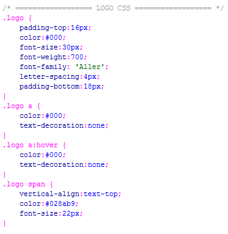
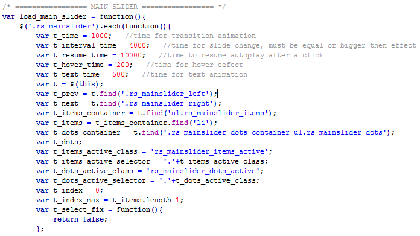
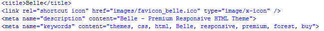

Created: 11-September-2012
By: WiniThemes
Email: support@winithemes.com
- Add / Modify / Delete content of the Theme GO
- CSS Files and JavaScript Files GO
- Search Engine Optimization GO
- Sources and Credits GO
Thank you for purchasing our product! We are very glad that you have decided on our HTML theme.
The theme is very easy to use and we are here to guide and help you, so please read and follow the documentation and if you have further questions write us a email support@winithemes.com. This documentation is more of a reference work if you do not know what to do and need a better understanding on how the template is built.
Belle has 10 HTML Files:
- index.html - Home Page
- about_us.html - About Us Page
- blog.html - Blog Page
- single_post.html - Single Post Page
- error_404.html - Error 404 Page
- portfolio.html - Portfolio Page
- single_project_a.html - Single Project Option A Page
- single_project_b.html - Single Project Option B Page
- features.html - Features Page
- contact.html - Contact Page
The structure of the page is made by Twitter Bootstrap v.2.1.0, you can use all the effects, slider, tabs that Bootstrap has to offer, Bootstrap Official Site.
You have to modify your email for the contact to work.

Replace it with your personal email.
AGAT has 4 CSS files attached:
- bootstrap.css - Twitter Bootstrap stylization CSS
- bootstrap-responsive.css - Twitter Bootstrap responsive CSS
- style.css - Belle stylization CSS
- prettyPhoto.css - PrettyPhoto stylization CSS
About bootstrap.css & bootstrap-responsive.css stilization you can read on Bootstrap Official Site
Same for prettyPhoto.css can be read on PrettyPhoto Site
As for style.css it's simple and easy to find and modify by class or id, all you have to do is search for the class you need. All the features, sliders, options are commented in css as /* === EXAMPLE NAME === */ as you see below:

Belle has 6 JavaScripts files attached:
- jquery-latest.min.js - Jquery Library
- jquery-ui.min.js - Jquery UI Library
- bootstrap.js - Bootstrap necessary JS
- jquery.prettyPhoto.js - PrettyPhoto necessary JS
- options.js - Belle necessary JS for Sliders / Features / Effects
- porto_filters.js - Belle necessary JS for Portfolio Filters
About the most important AGAT javascript, options.js, it can be easy modificated if it's necessary, all the sliders and effects can be found by a commented name like: /* ==== EFFECT NAME === */ like you see below:

Search Engine Optimization
In order to improve your search engine ranking, and to enable your web site to appear among search results, please don’t forget to change the description and keywords with your own.

As a best practice, the keywords from the meta tag are words that you should use in the texts from that page. Every page has to have it own keywords that are found in the page texts.
I've used the following images, icons, fonts or other files as listed.
"Belle" the online/preview version has images from FLICKR, the download version has no images.
The icons are from Bootstrap default icon list 140 icons.
Fonts used:
- Aller / Light / Bold / Regular / Italic / Display
- Source Sans Pro / Light / Bold / Regular / Italic
- Helvetica Neue / Light / Bold / Regular
Once again, thank you so much for purchasing this theme. As I said at the beginning, I'd be glad to help you if you have any questions relating to this theme. No guarantees, but I'll do my best to assist.